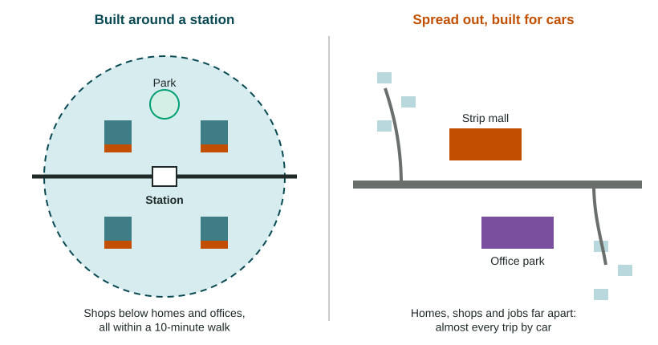

Sprawl uses a lot of land, a lot of fuel and a lot of money for roads and pipes. Since the 1970s, many cities have tried another path. This topic covers the tools they use and the arguments for and against them.
Sustainability in cities
Recall that sustainability means meeting people's needs without using up the resources future generations will need. For a city, that means housing a growing population while using less land, less energy and less money per person. Planners argue that compact cities do this better than sprawling ones, because people drive less and each kilometer of pipe and road serves more homes.
Smart growth and its tools

Smart growth is a set of planning policies that steer new building into compact, connected places instead of onto farmland at the edge. Its main tools:
- Mixed-use development: homes, shops and offices in the same building or block, such as apartments above a grocery. This reverses the old zoning habit of keeping each use in its own zone.
- Walkability: how easy and safe it is to reach daily needs on foot. Sidewalks, short blocks, crosswalks and nearby shops raise it.
- Transit-oriented development (TOD): dense, mixed-use building within a short walk of a rail or bus rapid transit station. Since the 1970s, Arlington County, Virginia, has packed offices and apartments around its Metro stations along one corridor, while keeping lower-density homes between them.
- New Urbanism: a design movement that builds neighborhoods like older towns, with a grid of walkable streets, houses close to the sidewalk, porches, a town center and a mix of house sizes. Seaside, Florida, begun in the early 1980s, is a famous early example.
Limiting outward growth
A greenbelt is a ring of farmland, parks and forest around a city where building is restricted. London's Metropolitan Green Belt, first proposed in the 1930s and made national policy in 1955, is one of the oldest. An urban growth boundary is a line drawn around a metro area: inside, building is allowed and encouraged; outside, land stays rural. Oregon's 1973 land-use law required every city to draw one, and the Portland region adopted its boundary in 1979. Copenhagen, Denmark, guides growth another way: its "Finger Plan" of 1947 lets the city grow along rail lines, like fingers, with green wedges kept open between them.
Slow-growth cities go further and cap how many new homes may be built each year. Boulder, Colorado, has limited its yearly growth in housing since the 1970s to protect open space and the town's character.
Praise and criticism
| Praise (supporters argue) | Criticism (critics argue) |
|---|---|
| Less sprawl: farmland and forest are protected | Less land to build on can raise land and home prices |
| Less driving, so less air pollution and fewer emissions | Higher prices may push lower-income families out, a kind of de facto segregation (separation by income that no law requires) |
| More housing choice: apartments, row houses and houses | New, denser buildings can erase the historic character of old neighborhoods |
| Livelier, safer streets and better health from walking | Families who want a big yard have fewer choices close to jobs |
The evidence is mixed and depends on the place. Portland shows both sides at the local scale of one metro area: its boundary kept farms and forests close to the city and helped light rail work, but housing costs rose sharply in the 2010s, and studies disagree about how much of that rise came from the boundary and how much from strong job growth. A strong answer gives both sides and says at what scale each one holds.